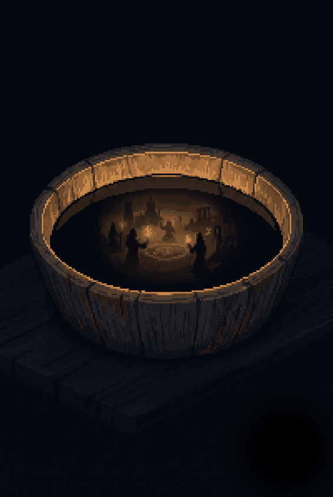

Bestiario
·
Datos de bestiario
El relato
Variantes del relato
Vitrina del capítulo
Defensa
De dónde nació el mito
Lecturas
Qué dice la investigación académica sobre esta pieza.
Otras piezas del archipiélago
El Grimorio del Archipiélago

Bestiario
Qué dice la investigación académica sobre esta pieza.
El Grimorio del Archipiélago